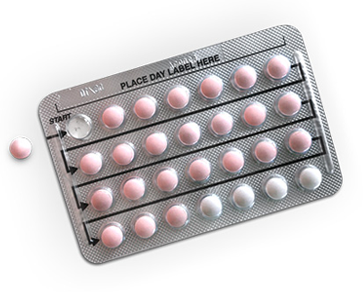
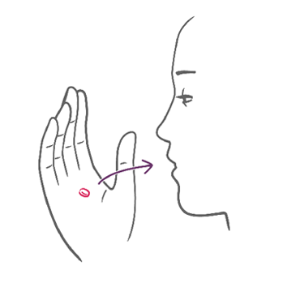

The Pill is a tablet you take once a day – there are a few different types of pill. The combined pill contains estrogen and a progestin, which stop the ovaries from releasing eggs. It also thickens the cervical mucus, which makes it harder for sperms to move freely and reach the egg. The so-called mini pill contains only 1 hormone, a progestin, which offers an alternative to those affected by the hormone estrogen.
You should swallow the pill at the same time every day, whether or not you have sex. Ask your healthcare provider whether the combined pill is a suitable method of contraception for you based on your medical history and, if yes, which is the best type for you.

Taking the pill is the same as taking other tablets, just pop one in your mouth and swallow. You should swallow the pill at the same time every day, whether or not you have sex. Forgetting to take your pill means it won’t be as effective as it can be and you could find yourself getting pregnant. If you miss 1 or more pills, or start a pill pack too late, have a look into the Patient Information Booklet provided to you with the pill pack. In case of doubt, ask your healthcare provider.
Different pills have different cycles, with some pill types you have to take hormone-free pills during the breaks to maintain continuous intake.

The IUS is a small, soft, T-shaped device with a reservoir containing the hormone progestin that is placed in the womb by your doctor. The IUS works by continuously releasing a low dose of progestin from the intrauterine system into the womb. It thickens the mucus of your cervix, which makes it harder for sperm to move freely and reach the egg and it also thins the lining of your womb. At 99.8% effectiveness, you’re about as protected as you possibly can be by a contraceptive method.
The IUS may be the right option for women appreciating a non-daily routine and who are keen on staying not pregnant.
However, there are some individual risk factors that make an IUS not recommendable to some women. Therefore consult your doctor in order to find out about your individual situation.
The IUS is placed into your womb through the vagina by your doctor in a standard in-office procedure. Right after the placement, you’re highly protected from pregnancy for up to 3 or 5 years, depending on the product. After the IUS is taken out, the contraceptive effect wears off quickly. Hence the IUS provides a rapid return to your previous level of fertility.
The IUD might sound a little space age but it just stands for Intrauterine Device, intrauterine meaning inside the uterus. It might look strange but it is a highly effective, small, T-shaped device containing a copper thread or cylinders which is placed in the womb by your doctor. The IUD releases copper ions which immobilizes the sperm and makes it really hard for them to move around in the womb, but does not stop the ovaries from making an egg each month. On the rare occasion a sperm does get through, the IUD body stops a fertilized egg from implanting itself to the lining. Not space age at all – just good sense.
The IUD may be the right option for women appreciating a non-daily routine and who are keen on staying not pregnant.
Once your healthcare provider has made sure the IUD is a suitable method for you based on your medical history and you’ve decided to use it, there really isn’t much to do.
The IUD is inserted into the woman’s womb through her vagina by a well-trained healthcare provider where it stays for up to 5 or 10 years depending on the type. You can of course change your mind at any point and your healthcare provider will simply take it out again for you. After the IUD is removed, the contraceptive effect wears off quickly and you can become pregnant as rapidly as women who have used no contraceptive at all.
The copper IUD is highly effective, however, it is not a method that is suitable for everyone. This is why, to be sure, discuss the method with your healthcare provider beforehand to make sure it’s right for you.
The contraceptive implant might sound a little space age initially but really it’s a highly effective, easy to hide contraceptive. About same size than a matchstick, the implant is placed just below the skin of your upper arm where it constantly releases the hormone progestin in small doses from a reservoir into your blood stream. The hormone keeps your ovaries from releasing eggs but also thickens your cervical mucus making it hard for sperm to move around in the womb and fertilize an egg.
The implant may be the right option for women appreciating a non-daily routine and who are keen on staying not pregnant.
After local anesthesia, a trained doctor will numb a small area of your inner upper arm and insert the implant just underneath the surface with a special needle. Once the placement is finalized, there is little or nothing left to do or remember. Seriously, the implant releases small amounts of hormones into your blood over the course of up to 3 years. It is suitable for women who want highly effective long-acting reversible contraception and wish to avoid a daily, weekly or monthly regimen. It can be removed at any time with minor surgery after local anesthesia by a well-trained doctor. Once the implant is removed, the contraceptive effect wears off quickly. Hence the Implant provides a rapid return to your previous level of fertility.